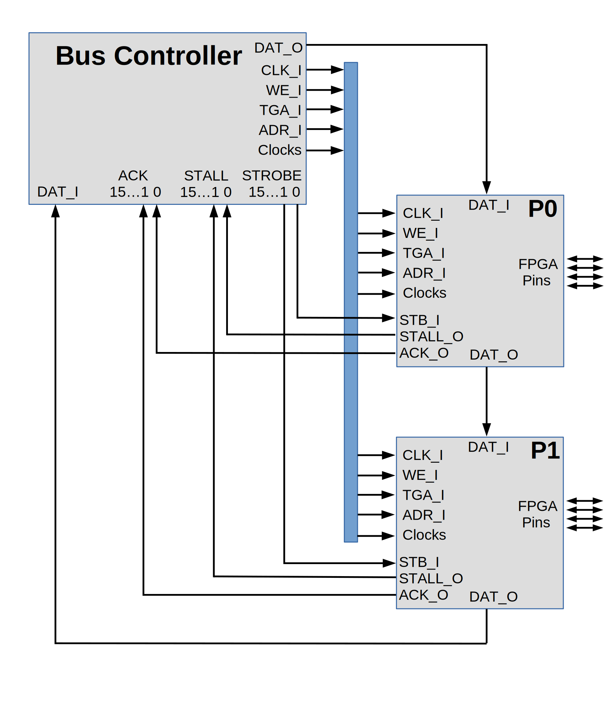

Peripheral Controller Wishbone Overview
The Wishbone bus (https://cdn.opencores.org/downloads/wbspec_b4.pdf) requires a WISHBONE DATASHEET as part of the requirements for meeting the Wishbone specification. This document is the Wishbone Datasheet for the Peripheral Controller project.
Variations from the wbspec_b4 :
1) Nomenclature for this document describes signals as _X, where X can be either I or O depending on whether the signal is treated as an input or output. The description for each signal should describe the source of the signal and the consumers of it.
2) Master and Slave in this document are called Controller and Peripheral to better match the intended use of the bus.
3) When a peripheral is not selected it MUST route DAT_I to DAT_O unchanged. When a peripheral is not selected it MUST route ACK_I to ACK_O.
Signal Names :
CLK_I : System clock. All peripherals use this 20 MHz clock to drive state machines and other peripheral logic. This is used by the controller and all peripherals.
WE_I : Write enable. This is set to indicate a register write into the peripheral. A zero for WE_I indicates a read operation.
STB_I : Strobe. This is set to indicate that a bus cycle to this peripheral is in progress. The cycle can be either a register read/write or a poll.
TGA_I : Address tag. A bus cycle with TGA_I set is a normal register read/write. For a read bus cycle with TGA_I cleared, the peripheral places the number of bytes it wishes to send to the host on DAT_O. A DAT_O value of zero indicates that the peripheral has no data for the host at this time. If DAT_O is non-zero the controller internally generates a read request for the number of bytes specified.
ADR_I : Address. An 8 bit address that specifies which register in the peripheral to read or write. The peripheral can treat some addresses as simple register reads/writes and other addresses as top-of-stack for a FIFO.
STALL_O : Stalled. The peripheral asserts this signal to indicate that more system clock cycles are needed to complete the bus cycle. The controller waits for STALL_O to be deasserted before completing the read or write operation.
ACK_O : Acknowledge. The peripheral asserts ACK_O to tell the controller that the read or write bus cycle has successfully completed. This signal is used in FIFO accesses to indicate that a FIFO is full (on write) or empty (on read). The controller write successive bytes to the same address to fill a FIFO. As long as the bytes are successfully written, the peripheral asserts ACK_O. When a byte can not be written, the peripheral does not raise ACK and the controller knows that the FIFO is full and the sequence of writes stops at that point. The controller sends an acknowledgment to the host giving the number of bytes written (or read). This lets the host application know how many bytes were successfully written to the FIFO letting the application resend the unacknowledged bytes at a later time.
DAT_X : An 8 bit data bus that is passed in ring from the bus controller through all peripherals and back to the bus controller. This arrangement is close to the Wishbone Data Flow Interconnection but the data path is a ring. This arrangement is sometime called a serpentine bus. The “Port Size” is 8 bits and the Granularity is 8 bits. There is no endianness associated with the data bus. During a bus write cycle the peripheral latches DAT_I into the selected register. During a read bus cycle the peripheral ignore DAT_I and places the requested data on DAT_O.
The DPcore implementation of Wishbone is fairly bare-bones. That is, it does not use other Wishbone signals such as: RST_I, TGD_I, TGD_O, CYC_I, ERR_O, LOCK_I, RTY_O, SEL_I, or TGC_I.
The Verilog code fragment below shows a typical peripheral interface definition. Clocks are system available strobes that occur every 100ns, 1.0us, 10us, 100us, 1.0ms, 10ms, 100ms, and 1 second. The four inout pins go to the FPGA pins. Some peripherals have eight instead of four FPGA pins.
module peri(CLK_I,WE_I,TGA_I,STB_I,ADR_I,STALL_O,ACK_O,DAT_I,DAT_O,clocks,pins);
input CLK_I; // system clock
input WE_I; // direction. Read-from-peri==0; Write-to-peri==1
input TGA_I; // ==1 for register read/write, ==0 for data-to-host poll
input STB_I; // ==1 if peri is addressed for r/w or poll
input [7:0] ADR_I; // address of target register
output STALL_O; // ==1 if we need more clk cycles to complete
output ACK_O; // ==1 if we claim the address and complete the read/write
input [7:0] DAT_I; // Data INto the peripheral;
output [7:0] DAT_O; // Data OUT from the peripheral, = DAT_I if not us.
input [7:0] clocks; // 100ns to 1 second pulses synchronous CLK_I
inout [3:0] pins; // FPGA pins for this peripheral
The diagram below shows the overall architecture of the bus system. Note that while the peripherals are Wishbone compliant, the bus controller and system interconnect is not.
